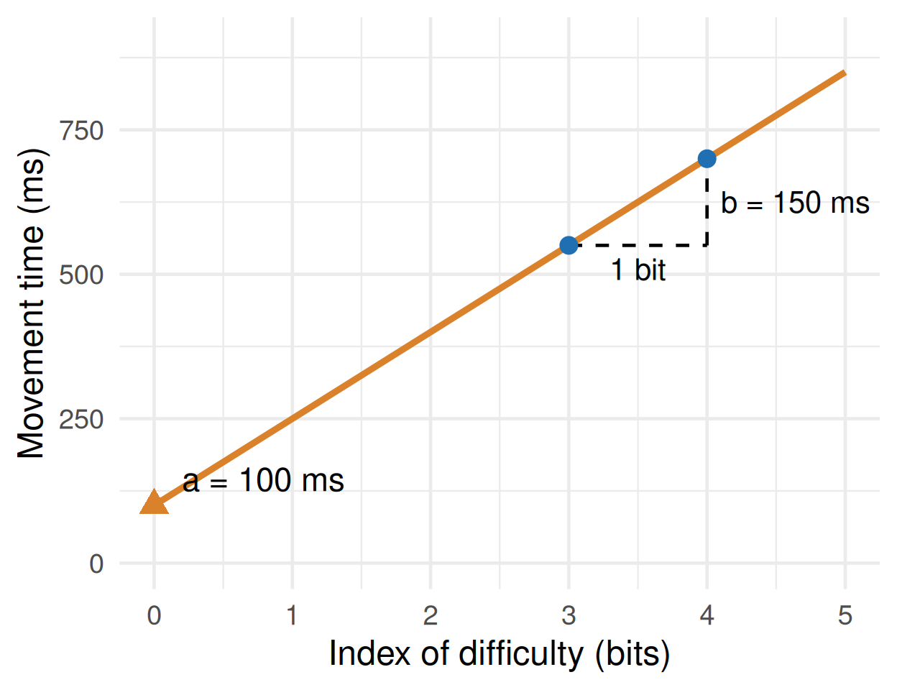
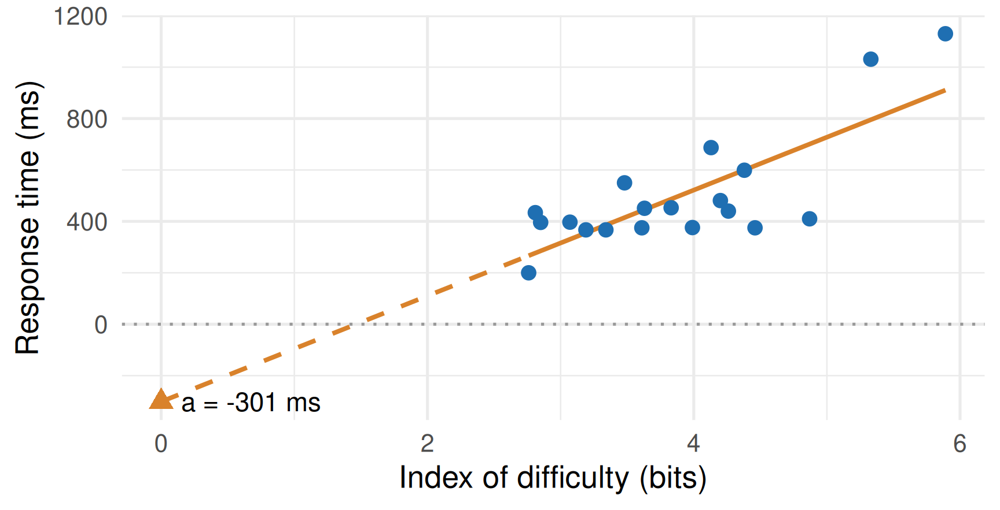
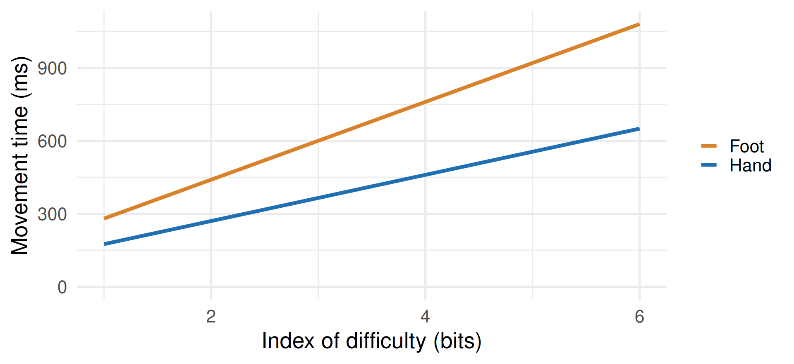

Foundations of action and motor control
Get these slides:
Dr Germano Gallicchio
Lecturer in Computational Psychophysiology
School of Sport Science, Bangor University, UK
On a computer press F11 to de/activate full-screen view.
For smartphone view and for pdf document: use “learning resources” link above.
Agenda
How an action differs from a movement
Plan: preparing the movement
Select and start: choosing one action and releasing it
Execute: from the cortex to the muscles
Correct: using feedback during the movement
Speed, accuracy and Fitts’s law
Back to the penalty kick
Overview: four stages of an action
An action is planned, selected and started, executed and corrected by different parts of the motor system, and its speed and accuracy trade off.
Running example: a penalty kick, from the decision to score to the foot striking the ball.
Movements and actions use the same machinery for different purposes
What they have in common
- A body part is displaced
- Muscles contract
- Motor neurons in the spinal cord are used
How they differ
- An action is produced with an intention, to achieve a goal; a movement can be triggered by a stimulus alone (e.g., a reflex).
Examples of movements and actions
Movements
- the knee-jerk reflex when the tendon below the kneecap is tapped
- pulling the hand away from a hot surface
Actions
- kicking the ball towards a chosen corner of the goal
- reaching for a water bottle during a break in play
The same swing of the leg can be either: what makes it an action is the goal behind it.
Discuss in pairs: movement or action?
| Situation | Answer |
|---|---|
| 1. Blinking when a ball flies towards the face | movement |
| 2. A goalkeeper diving to the side chosen before the kick | action |
| 3. Shivering on a cold day | movement |
| 4. A basketball player’s fake pass | action |
| 5. Catching a phone knocked off a table | open to debate: fast and largely automatic, but goal-directed |
| 6. A sprinter leaving the blocks at the starting gun | action: triggered by the gun, but produced to achieve a goal |
Four stages, four sets of structures
Different parts of the motor system contribute at different stages of the same action.
Plan: preparing the movement before it happens
Before the run-up, the kicker chooses the corner and how to strike the ball.
The motor areas lie at the back of the frontal lobe

Primary motor cortex

Premotor cortex and supplementary motor area
All three lie in the frontal lobe, just in front of the central sulcus: the primary motor cortex nearest to it, the premotor cortex in front of it on the side of the brain, and the supplementary motor area in front of it at the top and on the inner surface. More images
Images: Brodmann area 4 and area 6 animations, via Wikimedia Commons.
Secondary motor areas prepare movements
- They plan voluntary movements, and influence the primary motor cortex (the area that sends the commands for movement; see the Execute stage) rather than producing movement directly.
| Area | Prepares movements that are | Example |
|---|---|---|
| Premotor cortex | triggered by external cues | a sprinter leaving the blocks at the starting gun |
| Supplementary motor area (SMA) | internally generated and well learned | a gymnastics routine |
Optional: the degrees of freedom problem
There are potentially an infinite number of ways to perform the same action (e.g., reaching for a cup): many possible trajectories, joint positions and patterns of muscle contraction.
This is known as the degrees of freedom problem: the motor system must select one solution among many.
Optional: motor programmes
Memory-stored routines for actions and action sequences.
They reduce the degrees of freedom problem, because the solution is not computed anew each time.
They code for general aspects of a movement (e.g., its relative timing), which are then scaled to the situation.
Try it: what happens in the brain when you only imagine a movement?
Number the fingers of one hand: 1 = index, 2 = middle, 3 = ring, 4 = little finger. Touch each finger with the thumb, quickly, in this sequence, and repeat for a few seconds:
1 1 2 3 3 3 4 4, then in reverse: 4 4 3 3 3 2 1 1
Now remain still, and only imagine tapping the same sequence.
Predict: when you only imagined the sequence, which areas were active?
the same areas as when you tapped it
only the areas that plan movements
only the areas that execute movements
no motor areas at all
The answer is on the next slide.
Imagining a movement sequence activates planning areas, not execution areas (Roland et al., 1980)
Question: which areas of the cortex are active when a movement is planned, and which when it is executed?
Participants: 28 patients aged 15-65, with no major neurological problems, who were having their brain arteries X-rayed to rule out disease; 5 to 10 took part in each task.
Method: a radioactive tracer injected into the carotid artery measured blood flow, an index of local brain activity, in 254 regions of one hemisphere. Each task was compared with rest.
Tasks: forceful repeated flexions of one finger; the finger sequence from the previous slide, executed; the same sequence simulated internally at the same speed, without moving (muscle activity was recorded to check).
Result
| Task | Supplementary motor area | Primary motor cortex (opposite hemisphere) |
|---|---|---|
| Repeating one finger flexion | - | increased |
| Executing a sequence of finger movements | increased | increased |
| Only imagining the same sequence | increased | - |
When imagining, the increase in the supplementary motor area was about 60% of that when executing.
Take-home: simple movements can be run by the primary motor cortex alone; sequences are planned in the supplementary motor area.
Later studies have also found some primary motor activity during imagery.
Roland, P. E., Larsen, B., Lassen, N. A., & Skinhøj, E. (1980). Supplementary motor area and other cortical areas in organization of voluntary movements in man. Journal of Neurophysiology, 43(1), 118-136. https://doi.org/10.1152/jn.1980.43.1.118
Optional: reading this study critically
The authors point out two limitations of their own method:
Each measurement took 45 seconds, so the method cannot show which area becomes active first, or areas that are active only briefly.
During the rest condition, thinking was not controlled: participants may have been planning movements even then.
The groups were also small (5 to 10 participants per task), and the participants were patients rather than healthy volunteers, because the method required an injection into an artery.
Imagining an action engages the areas that plan it
Mental rehearsal of a skill (e.g., a gymnastics routine or a penalty) engages planning areas used to perform it.
This overlap is one rationale for imagery training in sport, used alongside physical practice rather than instead of it.
Imagery training improves performance, though less than physical practice (Driskell et al., 1994; Toth et al., 2020)
Question: does mentally practising a skill improve later performance?
Method: meta-analyses, which combine the results of many studies. Driskell et al. combined 35 studies; Toth et al. repeated the analysis with 37 newer studies (1995-2018).
Result: mental practice improved performance compared with no practice, with a moderate effect in the first analysis and a smaller one in the newer analysis. Physical practice had a larger effect than mental practice.
Take-home: imagery is a useful complement to physical practice, not a replacement for it.
Driskell, J. E., Copper, C., & Moran, A. (1994). Does mental practice enhance performance? Journal of Applied Psychology, 79(4), 481-492. Toth, A. J., McNeill, E., Hayes, K., Moran, A. P., & Campbell, M. (2020). Does mental practice still enhance performance? A 24 year follow-up and meta-analytic replication and extension. Psychology of Sport and Exercise, 48, 101672.
Optional: mirror neurons
Neurons active both when an action is performed and when the same or a similar action is observed being performed by someone else.
They may contribute to understanding and imitating others’ actions, and offer one rationale for observation training in sport.
Whether they cause or result from social behaviour remains debated.
Quick check: plan
Mentally rehearsing a finger sequence, without executing it, increases activity mainly in:
the supplementary motor area
the primary visual cortex
the spinal cord
the primary motor cortex of the opposite hemisphere only
correct answer: A
Select and start: choosing one action among many
The kicker must commit to one corner and hold back the alternatives, including a late change of mind.
The basal ganglia hold actions back and release one
A group of nuclei (clusters of neurons) deep in the brain, involved in starting voluntary movements that are not triggered by an external cue.
They continuously hold back possible movements, and select one by releasing it.
When the basal ganglia fail, starting a movement becomes difficult
- In Parkinson’s disease, the loss of dopamine (a neurotransmitter) in the basal ganglia makes it difficult to start movements, which become slow and small.
- External cues, such as a rhythmic beat, can help, because externally triggered movements depend less on the basal ganglia.
Quick check: select and start
Difficulty in starting movements, which improves when movements are paced by an external cue such as a rhythmic beat, suggests impaired function of:
the cerebellum
the basal ganglia
the primary visual cortex
the spinal motor neurons
correct answer: B
Execute: turning the plan into muscle contraction
The leg swings and the foot strikes the ball.
The primary motor cortex sends the commands for voluntary movement
It is essential for executing voluntary movements, and receives input from the planning areas.
Its commands travel down to the spinal cord; each hemisphere controls the opposite side of the body.
Stimulating the motor cortex moves the body part it maps (Penfield & Boldrey, 1937)
Question: how is the body represented in the motor cortex?
Participants: 163 patients undergoing brain surgery, mostly for epilepsy, awake under local anaesthesia.
Method: brief electrical stimulation of points on the exposed cortex; the body part that moved was recorded.
What the map looks like: search images of the motor homunculus
Make sure the image shows the motor homunculus (primary motor cortex, in front of the central sulcus, the groove separating the motor and the sensory cortex), not the sensory one (somatosensory cortex, the cortex that receives touch and body sensation, behind it): the two maps are similar but not identical.
Result: neighbouring body parts are controlled by neighbouring points, forming a map (the “homunculus”). The size of each body part on the map reflects the amount of cortex devoted to it, not its physical size.
Penfield, W., & Boldrey, E. (1937). Somatic motor and sensory representation in the cerebral cortex of man as studied by electrical stimulation. Brain, 60(4), 389-443.
Optional: the neighbouring sensory map

Just behind the central sulcus lies the primary somatosensory cortex, which receives touch and body sensation. It contains its own body map (a sensory homunculus), similar to, but not identical with, the motor one in front of the sulcus.
Image: primary somatosensory cortex with homunculus, via Wikimedia Commons.
Commands reach the muscles through motor neurons in the spinal cord
Motor neurons in the spinal cord connect to the muscle fibres. They receive commands from the brain and signals from sensory receptors.
At the neuromuscular junction (the synapse between a motor neuron and a muscle fibre), the release of acetylcholine (a neurotransmitter) makes the muscle fibre contract.
An effector is a part of the body that can move (e.g., a hand, a foot, the eyes).
A motor unit is one motor neuron and all the muscle fibres it connects to.
The hand is controlled more finely than the foot
Three reasons:
More motor cortex is devoted to the hand and fingers than to the foot and toes.
Muscles used for fine control, such as those of the fingers, have small motor units; large muscles, such as those of the thigh, have large ones.
The leg has more mass and inertia to move than the hand.
Optional: practice changes the map
The representation of trained body parts in the primary motor cortex can change with practice (plasticity).
Each muscle fibre receives input from only one motor neuron, but a single motor neuron may connect to many fibres: the smaller the unit, the finer the gradation of force.
Optional: the descending motor pathway in more detail
Solid arrows: descending commands (via the corticospinal tract). Dashed: modulating loops, via the thalamus. Dotted: feedback from the body.
Quick check: execute
The hand occupies a larger area of the motor cortex map than the foot because:
the hand is physically larger than the foot
more cortex is devoted to the fine control of the hand
the foot is controlled by the spinal cord only
the map represents only the upper body
correct answer: B
Correct: using feedback during the movement
During the run-up, the kicker adjusts the stride to arrive at the ball in the right position.
Some movements can be corrected while they unfold; others cannot
| Open-loop control | Closed-loop control | |
|---|---|---|
| Feedback used during the movement? | No: programmed in advance | Yes: visual and proprioceptive feedback (proprioception: the sense of the position and movement of the body, from receptors in muscles and joints) |
| Speed | Fast | Slower, because feedback takes time to process |
| Can be corrected once started? | No | Yes |
| Examples | a punch, a golf drive, the strike of a penalty | threading a needle, balancing on a narrow beam |
Most aiming movements combine both: a fast, programmed movement towards the target, followed by small corrections based on feedback.
Vision only helps a movement that is slow enough to use it (Woodworth, 1899)
Question: how does the speed of a movement affect the use of visual feedback?
Participants: four adults.
Method: participants drew lines back and forth, trying to make each line the same length as the previous one, in time with a metronome (from 20 to 200 movements per minute), with eyes open or closed.
Result: at slow speeds, accuracy was better with eyes open; from about 140 movements per minute, it was about the same with eyes open or closed.
Take-home: feedback takes time to use. Fast movements run open-loop; slower ones can be corrected.
Woodworth, R. S. (1899). The accuracy of voluntary movement. Psychological Review: Monograph Supplements, 3(3), 1-114.
The cerebellum coordinates movements and learns from errors
Involved in the coordination of movement and in balance.
Contains more neurons than all other brain regions combined.
Compares the intended movement with the feedback, corrects errors, and updates movements with practice.
The cerebellum is needed to learn from aiming errors (Martin et al., 1996)
Question: what happens when the link between seeing and throwing is disturbed?
Participants: 15 healthy adults and 27 patients with damage to the cerebellum or its connections.
Method: participants threw balls of clay at a target while wearing prism glasses, which shift the visual scene to one side.
Result: healthy participants first missed to one side, then corrected their throws over successive attempts; when the glasses were removed, they missed to the other side for a while. Patients with damage to particular parts of the cerebellum, or to its input pathways, adapted (gradually corrected their throws) poorly or not at all; damage to other parts left adaptation intact.
Take-home: parts of the cerebellum use errors to recalibrate movements.
Martin, T. A., Keating, J. G., Goodkin, H. P., Bastian, A. J., & Thach, W. T. (1996). Throwing while looking through prisms: I. Focal olivocerebellar lesions impair adaptation. Brain, 119(4), 1183-1198.
Quick check: correct
A movement that is programmed in advance and executed without using feedback is under:
closed-loop control
open-loop control
reflexive control only
cerebellar control only
correct answer: B
Speed and accuracy trade off
When a movement must be faster, accuracy decreases; when it must be more accurate, it becomes slower.
In a tapping task (moving the hand back and forth between two targets as quickly as possible), an instruction to tap faster produces more misses.
Video: a demonstration of the speed-accuracy trade-off (University of Houston).
In sport: a faster serve or shot is usually less accurate, and the best balance depends on the situation (e.g., a first serve versus a second serve in tennis).
Difficulty depends on how many target widths fit into the distance
- A movement is harder when the target is far away and narrow. What matters is the ratio of the two, not either one alone.
| Distance to the target (D) | Width of the target (W) | 2D ÷ W |
|---|---|---|
| 20 cm | 10 cm | 4 |
| 40 cm | 20 cm | 4 |
| 40 cm | 10 cm | 8 |
| 40 cm | 5 cm | 16 |
The first two movements are equally difficult: doubling both the distance and the width leaves the ratio unchanged.
The factor 2 comes from Fitts’s original definition: it adds the same amount to every movement, so it does not change which movements are harder.
Optional: why twice the distance?
D is measured to the centre of the target. A movement is on target if it ends anywhere within half a target-width (W ÷ 2) either side of the centre: this is the margin for error.
2D ÷ W is the same as D ÷ (W ÷ 2): the number of margins for error that fit into the distance.
A far target with a small margin for error demands a more precise movement than a near target with a large one.
The index of difficulty counts doublings
| 2D ÷ W | 2 | 4 | 8 | 16 | 32 |
|---|---|---|---|---|---|
| Index of difficulty (ID) | 1 | 2 | 3 | 4 | 5 |
A doubling means multiplying by 2. The index of difficulty is the number of doublings needed to go from 1 to the ratio: 1 → 2 → 4 → 8 takes three doublings, so a ratio of 8 has an index of difficulty of 3.
Each doubling of the ratio adds one unit of difficulty, called a bit.
Doubling the distance, or halving the width, therefore adds one bit.
Ratios in between give values in between: a ratio of 6 gives an index of difficulty of about 2.6.
Counting doublings in this way is, mathematically, a logarithm to base 2: ID = log2(2D ÷ W).
Optional: why the unit is called a bit
Fitts borrowed the unit from information theory, which was new in the 1950s.
One bit is the amount of information needed to choose between two equally likely alternatives (e.g., heads or tails).
Fitts proposed that an aimed movement transmits information: the narrower the target relative to the distance, the more information the movement must carry, and the longer it takes.
Narrower and more distant targets take longer to reach: Fitts’s law
Movement time (MT) increases in a straight line with the index of difficulty (ID):
\[ MT = a + b \cdot ID, \qquad ID = \log_2 \left( \frac{2D}{W} \right) \]
b is the slope of the line: the extra time added by each bit of difficulty.
a is the time that does not depend on difficulty (e.g., starting and stopping the movement): where the line would cross the vertical axis.
a and b are found by fitting a straight line to a person’s data, so they differ between people, effectors and devices.
Fitts, P. M. (1954). The information capacity of the human motor system in controlling the amplitude of movement. Journal of Experimental Psychology, 47(6), 381-391.
Optional: another version of the formula
A second version of the index of difficulty is widely used today, especially to test pointing devices (e.g., a mouse or a touchscreen):
\[ ID = \log_2 \left( \frac{D}{W} + 1 \right) \]
It counts doublings in the same way. For difficult movements, it gives almost exactly one bit less than Fitts’s version, for every movement, so it does not change which movements are harder, or the slope b.
For very easy movements (a target wider than twice its distance), Fitts’s version can give a negative difficulty; this version cannot: it is 0 only when the distance is 0. a is then the time for a movement of no distance.
MacKenzie, I. S. (1992). Fitts’ law as a research and design tool in human-computer interaction. Human-Computer Interaction, 7(1), 91-139.
Reading the formula: an example
Suppose a person has a = 100 ms and b = 150 ms per bit.
A movement with an index of difficulty of 3 takes 100 + 150 × 3 = 550 ms.
One more bit of difficulty (4) adds another 150 ms: 100 + 150 × 4 = 700 ms.
An analogy: a taxi fare. a is the fixed charge for getting in, however short the trip; b is the price per kilometre, here the price per bit of difficulty.

Tapping time rises in a straight line with difficulty (Fitts, 1954)
Question: how do the size and distance of a target affect movement time?
Participants: 16 right-handed young men.
Method: participants tapped a stylus alternately on two metal target plates for 15-second trials, with four target widths and four distances (16 combinations).
Result: the average time between taps increased in a straight line with the index of difficulty: halving the width or doubling the distance added a constant amount of time. Errors were few (below 5%) in every condition.
Take-home: speed and accuracy are traded off in a lawful, predictable way.
Demonstration: Fitts’s law in one person
On each trial, the cursor starts in a small rectangle and must be moved as quickly as possible into a target of random size, at a random distance.
The task opens in a new tab: PsyToolkit, Fitts’s law
Here the clock starts when the target appears, so the response time includes the reaction time before the hand starts moving, as well as the movement time.
At the end, its data are analysed on the next slide.
Run 20 trials in the new tab with the mouse. At the end, copy the data, come back to the slides, and paste them into the first cell of the next slide (replacing the numbers already there); then run the three cells. If anything fails, the vertical slide under the next one shows data recorded in advance.
The R page runs in the slide background. Click inside it to paste the data and run the cells; click outside it (or use the on-screen controls) to move on.
Backup: one person’s response times rise in a straight line with difficulty

19 trials (one trial was too slow and is excluded). Each additional bit of difficulty added about 200 ms (b); the points scatter around the line, but the line captures most of the pattern (about 60% of the variability in response time). Extended to an index of difficulty of 0 (dashed), the line crosses the vertical axis below zero (a = about -300 ms): a is an extrapolation (the line extended beyond the data), not a measured time.
Narrow targets take longer because they need more corrections
A fast, programmed movement brings the limb close to the target.
The narrower the target, the more small corrections, based on feedback, are needed before it is reached.
Each correction takes time: speed is exchanged for accuracy.
Each unit of difficulty adds more time for the foot than for the hand

Schematic. The law holds for both effectors; the foot has a steeper slope (b).
Quick check: speed and accuracy
- According to Fitts’s law, movement time increases when:
- the target becomes larger
- the target becomes closer
- the target becomes smaller or further away
- the movement is performed with the dominant hand
correct answer: C
- In a tapping task, an instruction to tap as fast as possible, ignoring errors, would most likely:
reduce both movement time and errors
increase both movement time and errors
reduce movement time and increase errors
have no effect
correct answer: C
Back to the penalty kick: the whole chain
| Stage | In the penalty kick |
|---|---|
| Plan | choosing the corner; gaze on the target |
| Select and start | committing to one corner, holding back the others |
| Execute | the leg swing and the strike |
| Correct | adjusting the run-up; the strike itself is too fast to correct |
Summary
An action is planned, selected and started, executed and corrected by different parts of the motor system, and its speed and accuracy trade off.
Review questions
Distinguish an action from a movement, with an example of each.
Describe the roles of the primary motor cortex and the supplementary motor area, with reference to executing and imagining an action.
Explain how the basal ganglia contribute to starting a movement, and what happens when they fail.
State Fitts’s law, and explain why movement time increases when a target is narrower or further away.
Explain the difference between open-loop and closed-loop control, with a sporting example of each.
Optional: Rob Gray’s Perception & Action podcast
127 – The Legacy of Paul Fitts I: Fitts’ Law & the Speed-Accuracy Tradeoff
129 – The Legacy of Paul Fitts II: A Three Stage Model of Motor Learning